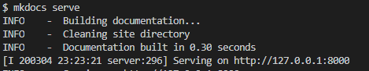

mkdocs使用说明
记录一下主要的操作流程
mkdocs常用于文档写作，官方文档（英文）传送门
1. 安装依赖
pip install mkdocs
常用命令如下：
mkdocs new [dir-name]- 创建一个新项目mkdocs serve- 启动热加载服务器，监测文档变更并在浏览器上实时预览mkdocs build- 在当前目录下生成site文件夹，将编写的文档转变成HTML文件mkdocs gh-pages --clean- 将site文件夹里的内容push到gh-pages分支，清理在原site文件夹中多余文件mkdocs -h- 命令帮助
2. 创建项目
使用mkdocs new [dir-name]创建dir-name文件夹，其结构如下所示：
mkdocs.yml # 配置文件
docs/
index.md # 主页
... # 其他页面
通常是为一个已经存在的git项目编写文档。因此一般的做法是将dir-name文件夹放置在项目的根目录下
3. 启动mkdocs的内置dev-server
MkDocs带有内置的开发服务器，可用于实时预览文档。在与mkdocs.yml配置文件位于同一目录下，运行mkdocs serve可启动Server，效果如下：

4. mkdocs.yml常用配置
site_name: learngo # 网站名
theme: readthedocs # 网站风格，内置mcdocs和readthedocs两种主题
nav:
- 简介: index.md
第三方主题：
1. mkdocs-material
theme: mkdocs-material
pip3 install mkdocs-material -i http://mirrors.aliyun.com/pypi/simple/ --trusted-host mirrors.aliyun.com
在mkdocs.yml里配置：
theme:
name: 'material'
2. mkdocs-bootswatch系列主题
theme: mkdocs-bootswatch
pip3 install mkdocs-bootswatch -i http://mirrors.aliyun.com/pypi/simple/ --trusted-host mirrors.aliyun.com
3. sphinx_rtd_theme（无法使用）
pip3 install sphinx sphinx-autobuild sphinx_rtd_theme -i http://mirrors.aliyun.com/pypi/simple/ --trusted-host mirrors.aliyun.com
5. 网站发布
用github托管网站。在项目根目录下执行mkdocs gh-pages --clean，将site文件夹下的内容推送至gh-pages分支，并删除多余文件。如果不存在gh-pages分支，程序会自动创建。
在github上进行如下配置：
Step1: 点击Setting

Step2: 在Github Page里设置Source

mkdocs bug
- 在windows平台下的vscode的命令行中执行
mkdocs gh-pages会报如下错误，但是文件确实是上传了，该错误可以忽略